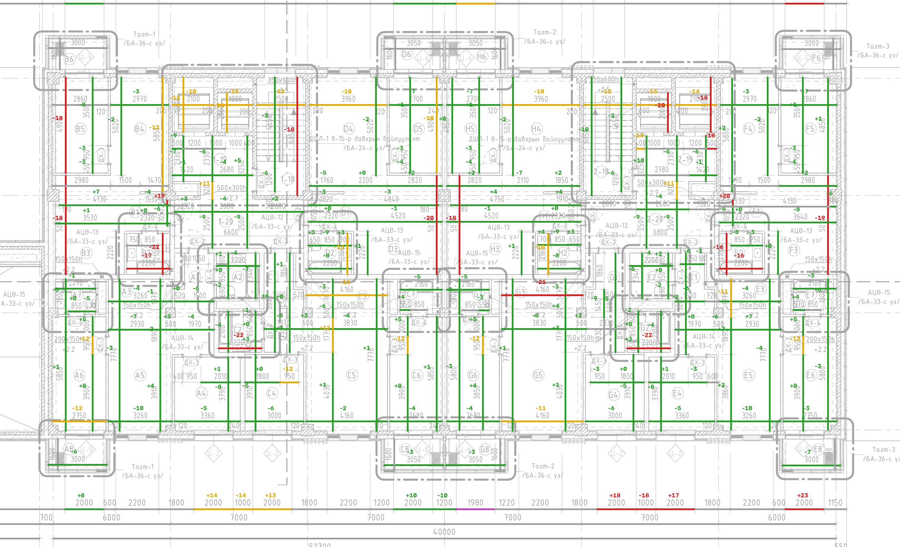
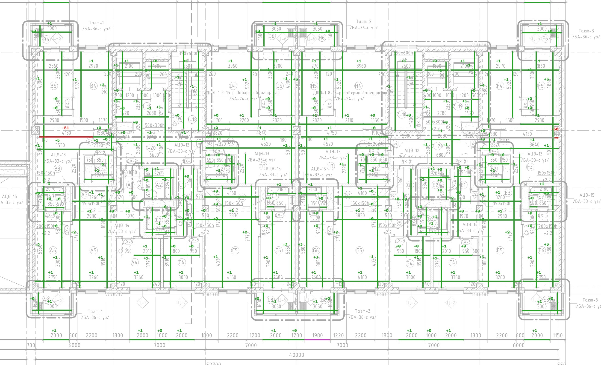

Every dimension printed on the floor-8 plan (PDF sheet p10) was read from the vector file and measured again in a copy of the model (the building file and all eight apartment FBX files), cut through at 1.2 m above the floor. The working files were not touched.
The fix is now in the working model. The walls are snapped to the drawing's own wall lines and the corner pillars patched. Each window is moved onto the drawing's jamb positions. The model and all eight apartment files were rebuilt, and this audit was re-run on a fresh copy.
Still open: one uniform 0.03 % size offset, about 13 mm over the 41 m tower and under 2 mm across any room.
It is shared with the website's plan data, and removing it means regenerating those plans as well. Also open: a 1.5 mm
difference on one apartment-file dimension, and the DWG's own wall coverage (it holds only some walls as wall objects).
Backups of the pre-fix files: D:\NOMT_backup_pre_fix_2026-10-11.
Close, but not exact. The layout, openings and rooms are right. Wall faces sit a few millimetres to about 2 cm off the drawing, from three systematic causes found below. A fix has been built and tested; with it the plan dimensions match to about 3 mm.
| Step | Count | Result |
|---|---|---|
| Dimension strings read from p10 (number + its two end ticks) | 363 | all found |
| The drawing against itself: drawn length vs printed number | 363 | 0 differ by more than 5 mm (at the true scale, below) |
| Both ends on a wall face or grid axis, so they can be measured in the model | 254 | 235 inside the floor, 19 facade opening chains |
| An end on a fixture, furniture, slope or label (not geometry) | 82 | not scored |
| No matching model face found | 12 | listed in audit/dimensions.json |
| Known drawing conflict | 1 | Flat G balcony: chain says 1980, DWG and schedule say 2000. Modelled 2000 (logged earlier). |
The wall shapes were traced from a rendered image of the PDF at 8.8 mm per pixel, then simplified with a 2-pixel tolerance. Any face can sit up to ~18 mm off and lean slightly. A 15 mm "stroke" correction was then taken off each side, but about 19 mm was needed, so walls are 6–9 mm too thick and rooms 3–12 mm too small. Median wall-thickness error against the standard sizes: 8.0 mm.
The pipeline uses 52.92 mm per PDF point. Grid axes 4→10 measure 756.092 pt for 40 000 mm on both p10 and p11, which gives 52.9036. Walls were placed with the first number, windows from the dimension chains in true millimetres. Measured on 37 window jambs, the windows sit 6 mm (north end) to 17 mm (south end) from their drawn jambs, a steady 0.25 mm per metre with only 1.2 mm scatter.
Hatched columns and casings traced as a 35 mm outline ring around an empty middle. They look solid in renders (they are capped top and bottom), but the geometry is hollow.
tools/snap_walls.py moves every traced wall face onto the PDF's own vector wall line (Revit draws each cut wall as a 0.43–0.51 pt
outline centred on the real face). It fills the hollow columns, and restores anything the snap would lose. Scored the same way as the current model:
| Measure | Current model | With snapped walls |
|---|---|---|
| Room / wall dimensions within 10 mm | 81 % | 97.9 % |
| … within 15 mm (LOA30 asks 95 %) | 92 % | 97.9 % |
| 95th-percentile error | 17.7 mm | 3.2 mm |
| Median error | −3.2 mm | +0.6 mm |
| Facade opening chains within 1 mm | — | 23 / 23 |
| Wall thickness, median error vs standard size | 8.0 mm | 0.1 mm |
Remaining: two pilaster faces (one each in flats B and F, mirror images) still come out 50 mm off in the prototype. They need a manual fix before rebuilding. The outer cladding face is built separately in the model, so it is not affected. The prototype is 2D: walls are vertical, so their cut at 1.2 m is the plan shape. The same 2D test on the current walls reproduces the 3D model's numbers (median −3.3 vs −3.2 mm), so the comparison is fair.
Applying it means: set the scale to 52.9036, use the snapped walls, rebuild the model and the eight apartment files, and re-run this audit. Changes of 3–20 mm do not show in the renders, so the existing 4K renders and the walkthrough can stay.


D:\NOMT_audit_copy_2026-10-10, MD5-checked). Everything was measured on the copy.Sources: USIBD LOA Specification Guide C120 v2 · USIBD LOA explained · Scan-to-BIM output validation: standardized geometric quality assessment · Scan-to-BIM QC validation techniques · Scan-to-BIM quality control · Verifying 3D models with deviation maps. These are written for scan-to-BIM. Here the reference is the drawing set rather than a point cloud, so "measured" means the drawing's printed dimensions.
Tools: tools/audit_dimensions.py (Blender cut + scoring), tools/snap_walls.py (fix prototype). Full results:
audit/dimensions.json, variants.json.